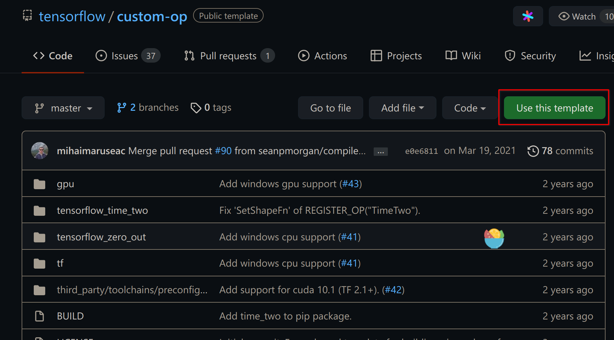

2203-TFcustom
实验记录：如何在 Tensorflow 中用 cuda 实现一个自定义的层的环境搭建（好吧我坦白我比较菜，环境就搞了好几天）
Docker 配置
首先我们最好在一个 docker 环境中进行测试，因为这个问题涉及到 cuda 版本、tf 版本和系统版本的多方调节，在 docker 中便于维护一个稳定独立的实验环境。
参考的安装文档是：
https://github.com/NVIDIA/nvidia-docker
需要使用 Nivdia-Docker, 因为需要在 docker 中调用 GPU。
详细的安装方式参考了： https://docs.nvidia.com/datacenter/cloud-native/container-toolkit/install-guide.html#docker
参考 Installing on Ubuntu and Debian 小节。
完成了这一步之后我们开始参考 TF 的 custom-op 的具体实现方案。
Custom OP
https://github.com/tensorflow/custom-op
Tensorflow 的官方给予了一个模版，不过这个模版的下载花费了不少力气，因为 docker proxy 配置花了不少时间。这里采用实验的 docker 镜像是：custom-op-gpu-ubuntu16
此外，为了方便对 docker 内的代码进行修改，这里采用将本地的一个仓库目录直接挂载到 docker 里，例如我用如下的操作方式：
建立模板仓库
此处设置模板，之后 clone 到一个 $CUSTOMOP 目录下。
Docker 准备
1 | |
之后文件被复制到了 /custom-op 目录下
但是这个时候官方的操作指令不能成功，在 GPU 版本的 custom-op 编译的时候会报关于 cuda_helper.h 找不到的错误，这个时候刷要借助一些特殊操作：
1 | |
之后 Makefile 才可以正常工作，在配置完成之后我发现可能 pytorch 可以更好的解决问题。这一部分的 docker 在此封存。